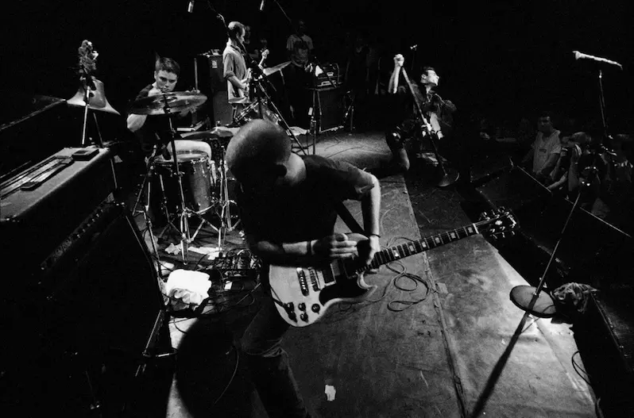
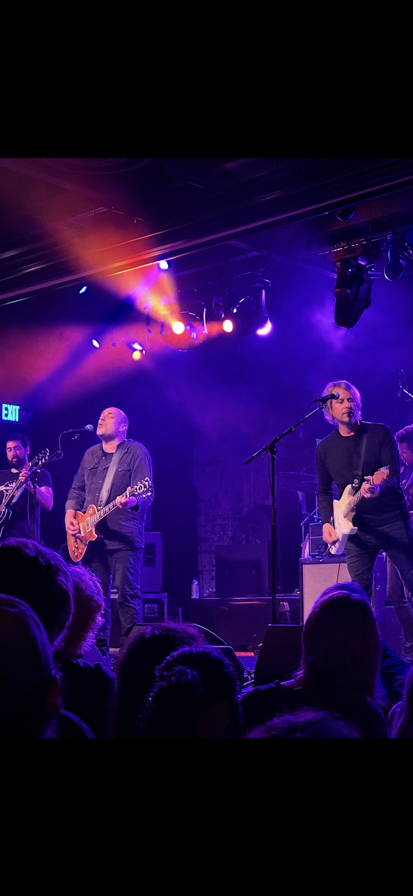

Years gone by
Starting in the shadow of larger genres like hardcore, bands who would be labeled as emocore bands absolutely despised the title, as the point in hardcore is to make a statement. Bands who would become emocore bands were labeled as such by the punk and hardcore fans as “soft” due to the topics and tones of the music, which is what earned the genre the initial term Emocore/Emotional Hardcore, given that it started as a hardcore/post-hardcore subgenre.
As the genre grew, becoming increasingly mainstream, it would begin to stray from its initial DIY intentions. As the second wave began, bands would start to become “commercially exploited.” Bands like Sunny Day Real Estate and The Get Up Kids became mainstream and would start getting broadcast over the radio, featured on live TV channels like MTV, and going on live country and even global tours. Given that Emo branched off a primarily DIY scene, seeing Emo blow up like it did caused many people holding onto the genre’s roots to call newer second wave bands fake emo.
Personally, I believe that this is a ridiculous take as music is made to be listened to and enjoyed. However, it is important to support your local music scene because, despite your feelings on second-wave emo and anything after that being authentic, it’s necessary to keep in mind that most, if not all, these bands were in a basement playing together at one point in time as well.
